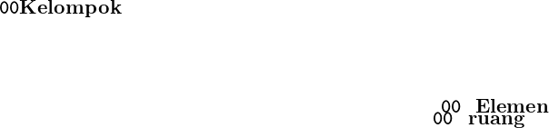

Ringkasan
Kawasaan tepi laut berkontribusi besar terhadap kesejahteraan masyarkat saat ini. Permintaan masyarakat terhadap akses tepi laut sebagai ruang ruang publik mendorong konsep desain tepi laut yang sesuai dengan kebutuhan masyarkat. Pengembangan baru tepi laut Senggol Parepare sebagai ruang publik menghadirkan dua bagian ruang. Kedua ruang ini berbeda baik secara karakter atau sifat fisiknya. Karena adanya perbedaan tersebut, maka penting untuk mengetahui preferensi pengunjung tentang ruang publik tepi laut. Desain penelitian ini adalah cross-sectional dengan menggunakan crosstabulasi dan analisis biplot dalam melakukan analisis data. Melalui survei kuesioner, 85 pengunjung tepi laut Senggol diminta untuk memilih ruang yang paling disukai termasuk alasannya serta elemen dan aspek ruang. Dari total responden, sekitar 66% memilih ruang A dan 34% memilih ruang B. Kebanyakan responden beralasan aspek fasilitas dalam memilih ruang. Sedangkan elemen yang paling disukai adalah jalan yang lebar. Sehingga, desain dan elemen yang tersedia pada ruang B tidak memenuhi preferensi dan kebutuhan kebanyakan pengunjung dan juga tidak berkontribusi terhadap kesejahteraan masyarakat.
Waterfront area has contributed hugely for the current people’s wellness. People’s demand of waterfront access bring up waterfront development that match with people’s needs. The new development Senggol Waterfront has built two part of space. Both of space are distinct in their character or quality. Because of that different, therefore it importnant to understand preference of visitor about waterfront public space. The knowledge will explain the need of visitor as a basic of planning the effective public space. The aim of this study is to analyse waterfront public space preference of the visitor. The method used is a qualitative and quantitative approach (mixed-method). The design of this study is a cross-sectional by using crosstabulation and biplot analysis for data analysis. Through survey questionnaire, 85 visitor of waterfront public space were asked to select the most preferred space including their reason as well as the aspects and the elements of the space. Out of total responden, about 66% selected A space dan 35% selected B space. Most of the respondent reasoned facility aspect for deciding a space. Whereas the most liked element was the wide path. As a result, the avalaible design and element in B space is not meeting the most visitors preference and need and also is not contributing towards visitors’ wellness
Keywords: Preference, Space, Aspect of Space, Element of Space, Senggol Waterfront Parepare.
Keywords: Preferensi, Ruang, Aspek ruang, Elemen ruang, Tepi laut Senggol Parepare
Tepi laut (waterfront) menjadi sebuah ruang dari perkotaan yang harus terus berkembang (Shamsuddin et al., 2013). Kawasan ini memiliki karakteristik dan perhatian khusus mengingat pentingnya air sebagai sumber kehidupan (Yassin et al., 2010). Kota Parepare, dengan garis pantai sepanjang 11.8 km, memiliki sejumlah kawasan tepi laut. Adapun sejumlah tepi laut itu adalah tepi sungai Tonrangeng, taman Mattirotasi, pantai Bibir dan tepi laut Senggol (Pantai Parepare).
Kota Parepare melalui perencanaan tata ruang wilayah kota, merencanakan pengembangan pada sejumlah titik wisata, salah satunya adalah Tepi laut Senggol Parepare (Amanda, 2020). Hoyle (2001) menjelaskan pengembangan yang berhasil ditandai dengan meningkatnya pengunjung pada kawasan tersebut. Pengembangan tersebut melalui dua tahap yang menghasilkan sejumlah jenis ruang. Ruang tersebut diantaranya yaitu 1. Ruang rekreasi 2. Ruang komersial 3. Ruang alamiah 4. Ruang kerja 5. Ruang perumahan 6. Ruang bersejarah .
Kualitas hidup seseorang dapat meningkat melalui penggunaan ruang yang dapat memenuhi kebutuhan seorang individu (Kim, 2012). Untuk memenuhi kebutuhan tersebut, perencana kota atau pemangku kebijakan dapat menggunakan pemahaman terkait preferensi untuk mendesain ruang publik yang optimal (Madureira et al., 2018). Zhang (2006) menjelaskan bahwa preferensi terhadap ruang adalah ungkapan selera orang terhadap suatu ruang. Ungkapan selera ini juga melekat atau ditimbulkan oleh sebuah elemen ruang perkotaan (Knox and Pinch, 2014). Elemen ruang adalah fisik ruang publik yang merupakan bagian dari tatanan (settings) ruang publik (Alves et al., 2008). Dengan demikian, mengetahui preferensi terhadap ruang maupun elemen-elemennya akan menjelaskan kebutuhan pengunjung pada suatu pengembangan.
Pengembangan pada kawasan ini dimulai pada tahun 2011. Pengembangan ini membagi kawasan menjadi dua bagian ruang yang berbeda. Ruang satu terletak di selatan kawasan yang disebut ruang A. Sementara, ruang lainnya terletak diutara kawasan yang disebut ruang B. Pada dasarnya, ruang A memiliki tatanan dan elemen buatan yang mewah dan penuh elemen buatan sedangkan ruang B mempunyai tatanan yang terlihat lebih alami dengan sedikit elemen buatan. Oleh karena kondisi yang berbeda tersebut, maka penting untuk mengetahui preferensi pengunjung adalah penting (Madureira et al., 2018). Madureira et al. (2018) menjelaskan pengetahuan terkait preferensi pengunjung terhadap ruang akan menjelaskan kebutuhan pengunjung dalam merancang ruang publik kedepan yang optimal.
Parepare merupakan kota kelahiran Bacharuddin Jusuf Habibie atau presiden ketiga Republik Indonesia. Sama seperti potensi beliau, Parepare juga berpotensi menjadi kota pariwisata yang berhasil, ramai dan berkelanjutan. Berdasarkan RPI2JM 2017-2021 kota Parepare, kawasan yang biasa disebut senggol ini merupakan kawasan strategis kota (KSK) untuk pengembangan PKL dalam kepentingan pertumbuhan ekonomi.
Garis pantai Parepare berada di sisi paling barat kota kecil ini, begitu pun letak dari kawasan tepi laut Senggol Parepare. Kawasan ini terbentang dari Pelabuhan Nusantara hingga Pasar Senggol yang beralamat di Jalan Pinggir laut. Daerah yang berbatasan laut ini mempunyai banyak tempat menarik di sekitarnya. Pada sebelah utara tempat ini berbatasan dengan Pasar Senggol, pada sebelah selatan terdapat Pelabuhan Nusantara, sedangkan pada sebelah timur ada Perumahan dan Lapangan. Selain itu, kawasan tepi laut ini berada di Kecamatan Ujung, Parepare.
Saat ini, terdapat perbedaan keberhasilan diantara ruang dalam mendatangkan pengunjung. Itu melatarbelakangi penelitian ini. Berdasarkan karakteristik, penelitian ini membagi kawasan ini menjadi dua ruang yaitu ruang A dan B. Kedua ruang tersebut dapat dilihat pada gambar 1.
Ruang A, satu dari dua ruang tepi laut, memiliki tatanan dan elemen yang cukup mewah dan berjumlah banyak. Beberapa elemen yang baru disekitar area adalah jalan pedestrian, lampu jalan, kedai makanan, dan square. Area ruang ini dapat dilihat pada gambar 2.
Ruang B adalah ruang yang telah bertahan cukup lama pada kawasan tepi laut Senggol. Secara keseluruhan, bentuk pada ruang ini tidak memiliki banyak perubahan. Salah satu yang masih bertahan adalah keberadaan pedagang kaki lima (PKL). Sejumlah elemen dan tatanan ruang ini pun hanya sedikit yang berubah. Selain itu, ruang ini cukup berbaur dengan alam, dimana orang masih berkesempatan untuk berinteraksi dengan air. Area ruang ini dapat dilihat pada gambar 3.
Tujuan dari penelitian ini adalah untuk menganalisis preferensi pengunjung pada ruang publik tepi laut. Dalam hal mencapai tujuan tersebut maka pendekatan penelitian sangat diperlukan. Pendekatan penelitian ini adalah kualitatif dan kuantitatif (mixed-method).
Menurut Groat and Wang (2013), penelitian kualitatif menekankan pada proses induktif, sebagaimana Creswell and Poth menjelaskan ini dengan pemberian pertanyaan open-ended. Pertanyaan tersebut berupa alasan individu memiliki preferensi pada ruang tertentu dengan tujuan mendapatkan deskripsi latar belakang yang mendasari pemilihan tersebut. Untuk pendekatan kuantitatif digunakan untuk meneliti pada populasi atau sampel tertentu. Pengumpulan data berdasarkan variabel penelitian. Analisis data menggunakan desain deskriptif analitik dengan pendekatan cross sectional yang bertujuan menggambarkan hubungan antara variabel-variabel dalam suatu populasi (Nurdini, 2006). Dengan demikian, penelitian ini dapat mengetahui latar belakang yang mendasari pemilihan ruang dan elemen-elemen ruang publik yang disukai.
Waktu penelitian diadakan adalah setiap hari, selama jam ramai objek penelitian. Rentang waktu yang dipilih adalah pukul 06.00-10.00 dan 18.00-21.00. Waktu tersebut dipilih karena berdasarkan pengamatan aktivitas pada tepi laut ini mulai ramai pada rentang waktu tersebut. Alat rekam penelitian dalam rangka membantu penelitian ini adalah 1. Kertas dan alat tulis 2. Kamera gawai 3. Peta 4. Kuesioner survei 5. Tabel dan diagram. .
Untuk data yang berfungsi kualitatif seperti kecenderungan dan deskripsi, peneliti berusaha memahami makna tema-tema dalam teks responden. Untuk data yang bersifat kuantitatif, peneliti mempelajari hubungan antara variabel-variabel dengan menggunakan pendekatan cross-sectional. Dari hasil pengisian kuesioner dilakukan analisis deskriptif dengan menggunakan crosstabulasi yang dikonfirmasikan dalam bentuk persentase dan narasi. Analisis ini menggunakan perangkat lunak analisis statistika R.
Sejumlah aspek ruang dan elemen ruang tersebut termasuk dalam variabel penelitian. Variabel pada penelitian dari kelompok aspek ruang terdiri atas aksesibilitas, keamanan, estetika dan fasilitas. Sedangkan dari kelompok elemen ruang terdiri atas Jumlah pohon, Bentuk pohon, Lebar jalan, Permukaan jalan, Warna bunga, Jenis kursi, dan Pencahayaan jalan, Orientasi elemen, Tempat wisata air, Bangunan penunjang, dan Elemen air.
Jumlah populasi yang digunakan adalah jumlah penduduk kota Parepare pada tahun 2019, sebesar 145.178 jiwa (Bps Kota Parepare, 2020). Berdasrkan jumlah populasi dan tujuan penelitian, maka teknik probability sampling dengan metode stratified random sampling digunakan. Untuk mendapatkan jumlah sampel, maka penelitian ini menggunakan rumus Slovin dengan menetapkan nilai presesi 89%, seperti berikut ini:
| Keterangan: | n = Jumlah sampel |
| N = Jumlah populasi | |
| d = Nilai presisi 89% |
Berdasarkan rumus di atas, maka jumlah total sampel adalah:
Berdasarkan teknik pengambilan sampel yang digunakan, penelitian ini mengambil responden sebanyak 85 orang. Responden tersebut terdiri dari beragam karakteristik yang berbeda. Karakteristik tersebut ditinjau dari lima kategori berdasarkan: 1. Jenis kelamin 2. Kelompok usia 3. Suku 4. Tingkat pendidikan 5. Pekerjaan.
| Identitas Responden
| Jumlah |
Persentase |
|
|
Jenis kelamin |
Laki-laki | 58 |
68% |
| Perempuan | 27 |
32% |
|
| Total | 85 |
100% |
|
|
Usia |
Remaja | 35 |
41% |
| Dewasa | 30 |
35% |
|
| Manula | 20 |
24% |
|
| Total | 85 | 100% |
|
|
Suku |
Bugis | 60 |
71% |
| Nonbugis | 25 |
29% |
|
| Total | 85 |
100% |
|
|
Pendidikan |
¡ sma / sederajat | 9 |
11% |
| sma / sederajat | 33 |
39% |
|
| Perguruan tinggi | 43 |
51% |
|
| Total | 85 |
100% |
|
Berdasarkan data keseluruhan responden terlihat bahwa mayoritas pengunjung merupakan pengunjung remaja dengan didominasi oleh laki-laki. Pengunjung paling banyak adalah mereka yang bersuku bugis dan memiliki pendidika terakhir sarjana.
Setelah didapatkan data seluruh responden, langkah berikutnya adalah melakukan analisis data. Pada proses ini, peneliti menganalisis data dari hasil survei kuesioner mengenai preferensi pengunjung terhadap ruang-ruang yang berkaitan dengan alasan memilih dan elemen-elemen yang disukai. Analisis berguna untuk membangun sebuah gambaran holistik dan lengkap terkait preferensi terhadap ruang yang ada pada suatu kawasan tepi laut.
Berdasarkan respon ruang yang disukai dari tepi laut Senggol, terdapat 85 total responden. Dari total responden tersebut 59% (56) responden menyukai ruang A dan 41% (29) responden menyukai ruang B (lihat gambar 4).
Selanjutnya, peneliti mempelajari hubungan antara variabel-variabel dengan menggunakan pendekatan cross-sectional. Dari hasil pengisian kuesioner dilakukan analisis deskriptif dengan menggunakan crosstabulasi yang dikonfirmasikan dalam bentuk persentase dan narasi. Crosstabulasi merupakan teknik untuk meringkas kandungan informasi menjadi kelompok- kelompok kecil yang relevan dengan tujuan penelitian. Analisis ini menggunakan perangkat lunak analisis statistika R.
Hasil menunjukkan bahwa responden paling menyukai ruang yang nyaman pada kategori fasilitas. Pada kategori aksesibilitas, responden memiliki preferensi terhadap ruang yang luas. Keleluasaan mendukung responden untuk memanfaatkan ruang dengan semaksimal mungkin. Berdasarkan 150 total respon terkait alasan menyukai ruang tertentu, diantara 54-58% (46-50) responden memiliki preferensi yang kuat terhadap kategori aspek estetika, aksesibilitas, dan fasilitas. Berbeda dengan 8% (7) responden yang menunjukkan preferensi terhadap keamanan (lihat tabel 2).
Dari total 150 respon terkait alasan yang mendasari pemilihan ruang, respon digolongkan berdasarkan macam-macam ruang yaitu ruang A dan B. Berdasarkan ruang itu, 25% (37) responden menyukai ruang A karena aspek estetikanya dibandingkan dengan 20%(30) karena fasilitas dan 21% (32) karena aksesibilitas. 13% (20) responden memilih ruang B karena aspek fasilitas dibandingkan dengan 10% (15) karena aksesibilitas dan 6% (9) arena estetika. Meskipun demikian, kategori aspek fasilitas konsisten memiliki preferensi tinggi terhadap kedua ruang. Berbanding terbalik dengan keamanan yang berkontribusi kecil terhadap pemilihan ruang. Hasil ini dapat dilihat pada tabel 3.
Pada penelitian ini, responden diberi pilihan jenis-jenis elemen yang disediakan berdasarkan variabel penelitian. Tujuan analisis ini adalah untuk memahami apa saja elemen sehingga pengunjung memilih ruang tertentu. Responden meluangkan waktu untuk memilih beberapa elemen yang mereka sukai. Jenis elemen yang disukai kemudian dicatat.
Hasil menunjukkan bahwa responden paling menyukai elemen dari kelompok orientasi elemen dan lebar jalan. Pengunjung menyukai elemen yang menghadap ke laut dari kategori elemen orientasi elemen. Sedangkan, pengunjung menyukai jalan yang lebar lebih dari tiga meter dari kelompok lebar jalan.
Berdasarkan 275 total respon terkait elemen yang disukai, diatas 60% responden menyukai elemen dari kelompok lebar jalan, tingkat cahaya, dan orientasi elemen. Diantara 43-47% responden menyukai elemen dari kelompok bentuk pohon dan permukaan jalan. Sementara, dibawah 25% menyukai dari kelompok jumlah pohon dan jenis kursi (lihat table 4).
Berdasarkan 267 total respon terkait elemen yang disukai, respon digolongkan berdasarkan macam-macam ruang terdiri dari ruang A dan B. Untuk ruang A, kebanyakan responden 14% (38) menyukai elemen dari kelompok lebar jalan dan orientasi elemen. Diantara 10-13%(30-36) menyukai bentuk pohon, permukaan jalan, dan tingkat cahaya dibandingkan dibawah 10% menyukai bentuk pohon dan jenis kursi. Untuk ruang B, sama dengan ruang A, kebanyakan menyukai orientasi elemen sebanyak 7%(18) responden. Diantara 4-6% (10-17) responden menyukai bentuk pohon, lebar jalan, dan tingkat cahaya berurutan.
|  | Ruang a |
Ruang b |
Total |
| Jumlah pohon | 16 (6%) |
4 (1%) |
20 (7%) |
| Bentuk pohon | 30 (11%) | 10 (4%) | 40 (15%) |
| Lebar jalan | 38 (14%) |
13 (5%) |
51 (19%) |
| Permukaan jalan | 31 (12%) |
6 (2%) |
37 (14%) |
| Jenis kursi | 9 (3%) |
2 (1%) |
11 (4%) |
| Tingkat cahaya | 36 (13%) |
17 (6%) |
53 (20%) |
| Orientasi elemen | 37 (14%) |
18 (7%) |
55 (21%) |
| Total | 197 (74%) |
70 (26%) |
267 (100%) |
Sumber: Analisis, 2022
| |||
Dari hasil analisis yang telah dilakukan disimpulkan bahwa pengunjung menyukai ruang A. Ruang ini terkenal dengan elemen binaan seperti lampu jalan, permukaan keramik, dan bangunan yang terpelihara. Hasil ini berbeda dengan penemuan dari Zhang (2006). Zhang (2006) menemukan bahwa preferensi paling tinggi adalah ruang yang alami daripada ruang binaan. Oleh sebab itu, perbaikan dan peningkatan elemen buatan harus dipertimbangkan sebagai isu yang penting untuk desain dan pengelolaan ruang di tepi laut perkotaan. Orang pada ruang A lebih menyukai aspek fasilitas dan elemen dari kelompok lebar jalan. Sedangkan responden pada ruang B juga lebih menyukai aspek fasilitas, namun menyukai elemen dari kelompok orientasi elemen.
Alves, S., Aspinall, P. A., Thompson, C. W., Sugiyama, T., Brice, R., and Vickers, A. (2008). Preferences of older people for environmental attributes of local parks. Facilities.
Amanda, T. A. (2020). Strategi Pengembangan Pariwisata di Kota Parepare oleh Dinas Olahraga Pemuda dan Pariwisata Kota Parepare. PhD thesis, Universitas Hasanuddin.
Bps Kota Parepare (2020). Kota Parepare dalam Angka Parepare Municipality in Figures 2020. Badan Pusat Statistik Kota Parepare, 73720.2002(1102001.7372).
Creswell, J. W. and Poth, C. N. (2016). Qualitative Inquiry and Research Design: Choosing among Five Approaches. Sage publications.
Groat, L. N. and Wang, D. (2013). Architectural Research Methods. John Wiley & Sons.
Hoyle, B. (2001). Lamu: Waterfront revitalization in an East African port-city. Cities (London, England), 18(5):297–313.
Kim, H. J. (2012). Researching Indoor Public Space Attributes: Enhancing the Interaction between Older Adults and Children. PhD thesis, North Carolina State University, Ann Arbor.
Knox, P. and Pinch, S. (2014). Urban Social Geography: An Introduction. Routledge.
Madureira, H., Nunes, F., Oliveira, J., and Madureira, T. (2018). Preferences for Urban Green Space Characteristics: A Comparative Study in Three Portuguese Cities. Environments, 5(2):23.
Nurdini, A. (2006). ” cross-sectional vs longitudinal”: Pilihan rancangan waktu dalam penelitian perumahan permukiman. DIMENSI (Journal of Architecture and Built Environment), 34(1):52–58.
Shamsuddin, S., Abdul Latip, N. S., Ujang, N., Sulaiman, A. B., and Alias, N. A. (2013). How a city lost its waterfront: Tracing the effects of policies on the sustainability of the Kuala Lumpur waterfront as a public place. Journal of Environmental Planning and Management, 56(3):378–397.
Yassin, A. B. M., Eves, C., and McDonagh, J. (2010). An evolution of waterfront development in Malaysia. In Proceedings of the 16th Annual Conference of the Pacific Rim Real Estate Society, Wellington, New Zealand, pages 24–27.
Zhang, Y. (2006). A Landscape Preference Study of Campus Open Space. Mississippi State University.